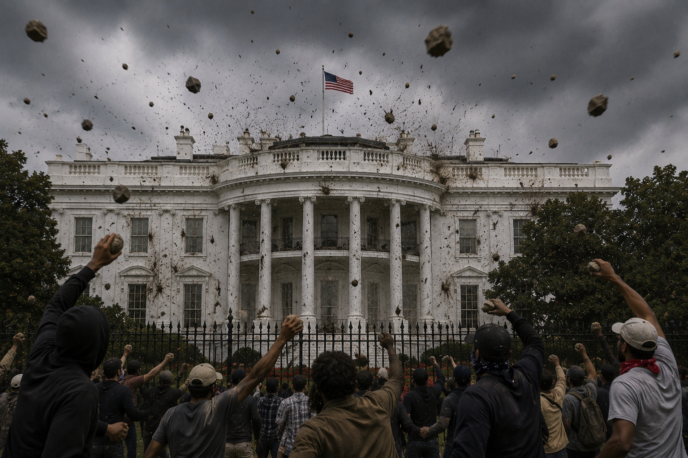

Casa Branca é apedrejada
Manifestantes se exaltam e vandalizam a Casa Branca nesta Sexta-Feira (01/07) e polícia tem de intervir.
Na tarde desta terça-feira, a Casa Branca teria sido alvo de um protesto que rapidamente se transformou em tumulto. De acordo com relatos fictícios de testemunhas presentes no local, um grupo de manifestantes lançou pedras em direção ao prédio histórico, causando danos superficiais em algumas áreas externas e gerando preocupação entre as autoridades responsáveis pela segurança do local. Ainda segundo as informações deste cenário fictício, o ato começou de forma pacífica, mas a situação teria se agravado após divergências entre grupos presentes na manifestação. Imagens que circularam nas redes sociais mostrariam objetos sendo arremessados contra grades e estruturas próximas à Casa Branca, enquanto equipes de segurança tentavam conter o avanço dos participantes. Diante do aumento da tensão, forças policiais teriam sido acionadas para restabelecer a ordem. A intervenção teria incluído o isolamento da área e a dispersão dos manifestantes, encerrando o protesto após algumas horas. Até o momento, não haveria registro oficial de feridos graves neste cenário fictício, e as autoridades anunciariam a abertura de uma investigação para apurar os acontecimentos.
"Não podemos permitir que a violência substitua o diálogo. Nossa prioridade foi garantir a segurança de todos os envolvidos e restabelecer a ordem o mais rápido possível." — Porta-voz fictício das autoridades locais.
